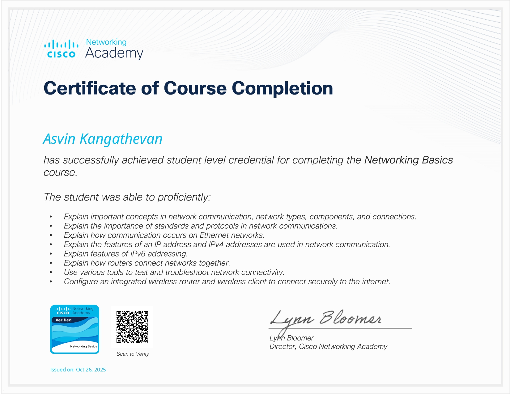
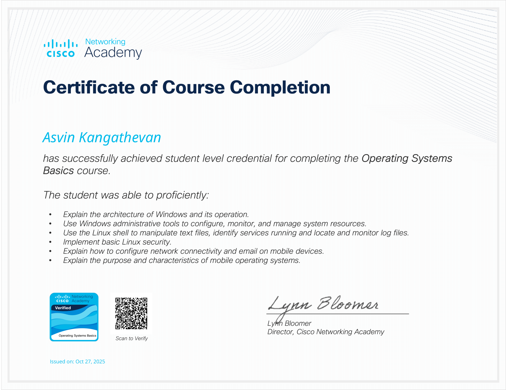
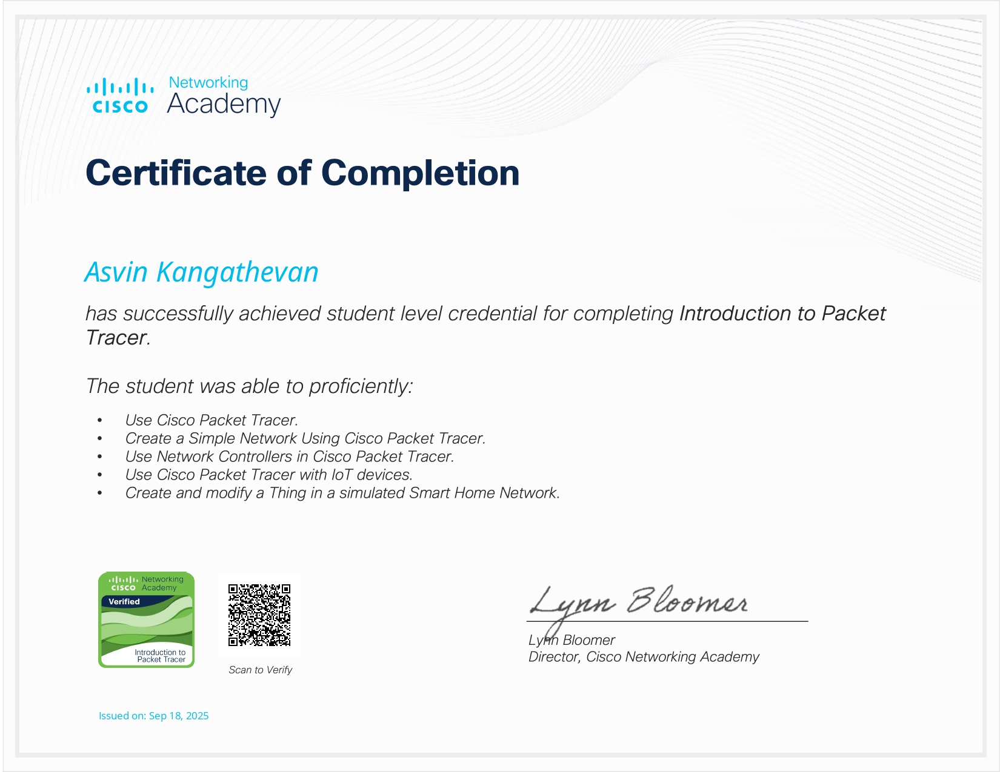

2025 – 2027
LYCÉE TURGOT, PARIS
BTS Services informatiques aux organisations
Option A - Solutions d'infrastructure, systèmes
Avec un intérêt marqué pour les systèmes, les réseaux et la cybersécurité, je développe continuellement mes compétences afin de répondre aux exigences actuelles en matière de sécurité informatique et d'optimisation des environnements IT.
Je m'appelle Asvin Kangathevan, j'ai 19 ans et je suis actuellement en première année de BTS SIO (Services Informatiques aux Organisations), spécialité SISR (Solutions d'Infrastructure, Systèmes et Réseaux), au Lycée Turgot à Paris. Ce portfolio s'inscrit dans le cadre de ma formation et reflète mon parcours, mes compétences acquises, ainsi que mes objectifs professionnels.
Passionné depuis toujours par l'informatique, j'ai développé un intérêt particulier pour la cybersécurité et ses enjeux dans un monde numérique en constante évolution. Au fil de ma formation, j'ai acquis des compétences solides en : Gestion et sécurisation des réseaux, Administration des systèmes, Mise en place d'infrastructures informatiques sécurisées, Utilisation d'outils professionnels de configuration, de supervision et de protection des environnements IT.
Je complète également mes connaissances en programmation, virtualisation et gestion des infrastructures cloud, des domaines devenus indispensables dans le secteur de la cybersécurité.
Déterminé à progresser et à faire de ma passion mon métier, je suis constamment à la recherche de nouvelles connaissances et d'expériences pratiques pour affiner mon expertise. Mon objectif est de devenir un acteur engagé de la cybersécurité, capable de répondre efficacement aux défis de demain.
BTS Services informatiques aux organisations
Option A - Solutions d'infrastructure, systèmes
BTS Services informatiques aux organisations
Option B - Solutions logicielles et applications métiers
Bac Pro Systèmes Numériques
Option RISC
Stage — Administration systèmes et réseaux
Programmation Web
Maintenance Informatique
Lycée Maurice Ravel, 75020 Paris
WETRADE, 75002 Paris
BESTOCAZ, 75000 Paris
SMART LINE, 75015 Paris
Portfolio • BookingAUTO • WordPress
1 procédure PDFVirtualBox • Linux Mint • Ubuntu Server • Proxmox • LAMP • Docker • Nextcloud • Mattermost • Portainer
4 procédures PDFCisco • VLAN • Routage • NAT • Brassage • Switch • Wireshark
Projets et travaux pratiquesGLPI • OCS Inventory • Odoo • Active Directory • RustDesk • Maintenance
1 procédure PDFPrometheus • Grafana • Windows Exporter • Zabbix
1 procédure PDFSafeLine • CrowdSec • Suricata • UFW • OpenSSH • Restic • CTF
4 procédures PDF



Document récapitulatif présentant l'ensemble de mes compétences techniques, formations et expériences acquises durant mon parcours de formation BTS SIO.
Apache2, MariaDB et PHP sur Linux
Docker Engine et Docker Compose sur Linux
Déploiement d'un CMS avec Docker
Inventaire réseau automatisé
Gestion du parc informatique et des incidents
Stockage et partage de fichiers avec Docker
Administration des conteneurs Docker
Supervision des systèmes et services
Détection des comportements malveillants
Détection des intrusions réseau avec un IDS
Administration sécurisée à distance
Sauvegarde et restauration des données
Face à l'évolution des cyberattaques, les entreprises doivent renforcer la surveillance de leurs systèmes d'information. Les technologies IDS, NDR et SIEM permettent de détecter les activités suspectes, d'analyser les événements de sécurité et de faciliter les investigations.
Cette veille technologique consiste à suivre les innovations, les nouvelles versions et les améliorations de ces solutions afin de comprendre leur évolution et leur impact sur la cybersécurité des entreprises.
Comment les technologies IDS, NDR et SIEM évoluent-elles pour améliorer la détection des cyberattaques et la protection des réseaux d'entreprise ?
Un IDS surveille le trafic réseau ou les activités d'un système afin de détecter des comportements suspects ou des signatures d'attaques. Il génère des alertes pour les administrateurs. Exemple : Suricata.
Le NDR analyse les communications réseau afin d'identifier des activités malveillantes, notamment les mouvements latéraux et les comportements anormaux. Il aide les équipes de sécurité à enquêter et à réagir aux incidents.
Un SIEM centralise les journaux et événements provenant des serveurs, équipements réseau et applications. Il permet de rechercher, corréler et analyser ces données afin d'identifier des incidents de sécurité. Exemple : Wazuh.
Security Onion est une plateforme de surveillance et d'investigation de sécurité qui intègre notamment Suricata et Zeek. Elle permet d'exploiter les alertes, les journaux et les données réseau pour analyser les incidents.
Fonction : analyser les activités et produire des alertes.
Avantage : identifier rapidement des attaques connues à partir de signatures.
Limite : certaines attaques inconnues ou communications chiffrées peuvent être difficiles à détecter.
Fonction : surveiller les communications et rechercher des comportements suspects.
Avantage : aider à détecter des mouvements latéraux et des anomalies.
Limite : nécessite une bonne visibilité du réseau et un réglage adapté pour limiter les faux positifs.
Fonction : collecter et analyser les journaux de plusieurs équipements.
Avantage : rapprocher des événements provenant de sources différentes.
Limite : nécessite une collecte fiable, des règles pertinentes et une gestion du volume de données.
Nouveauté : Suricata 8.0 introduit notamment un mode pare-feu expérimental et des améliorations de son moteur d'analyse du trafic.
Analyse technique : Suricata est principalement utilisé comme IDS ou IPS. L'évolution de ses fonctionnalités permet d'étendre ses possibilités de traitement des flux réseau. Le mode pare-feu expérimental représente une évolution vers un contrôle plus avancé du trafic.
Intérêt pour les entreprises : les administrateurs peuvent envisager de nouvelles méthodes de surveillance et de protection des réseaux.
Limites : une fonctionnalité expérimentale ne doit pas être déployée directement en production sans tests. Les performances dépendent aussi du matériel, des règles et du trafic analysé.
Source : Annonce officielle de Suricata 8.0
Nouveauté : Zeek 8.1 adopte ZeroMQ comme système de communication par défaut entre les composants d'un cluster, à la place de Broker.
Analyse technique : dans un déploiement distribué, les composants de Zeek doivent échanger des informations. L'utilisation de ZeroMQ modifie cette communication et vise à améliorer son efficacité.
Intérêt pour les entreprises : cette évolution peut faciliter l'exploitation de Zeek dans les infrastructures utilisant plusieurs capteurs pour analyser un volume important de trafic.
Limites : les gains de performances dépendent de l'architecture déployée. Une migration nécessite de vérifier la compatibilité des configurations et des extensions.
Source : Annonce officielle de Zeek 8.1
Nouveauté : cette version apporte notamment des évolutions liées aux intégrations de modèles d'intelligence artificielle et des mises à jour de composants de la plateforme.
Analyse technique : l'intégration d'outils d'assistance par IA peut aider les analystes à interpréter les informations de sécurité et à accélérer certaines étapes des investigations. Elle ne remplace cependant pas la validation humaine.
Intérêt pour les entreprises : une assistance à l'analyse peut contribuer à réduire le temps nécessaire pour examiner certaines alertes et comprendre un incident.
Limites : certaines fonctions sont réservées à Security Onion Pro. L'utilisation de modèles IA nécessite aussi de prendre en compte la confidentialité des données et les risques d'erreur.
Source : Blog officiel Security Onion